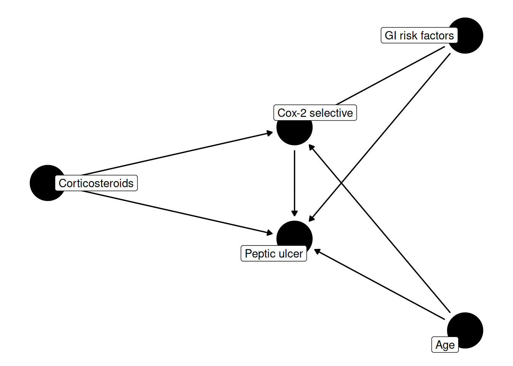
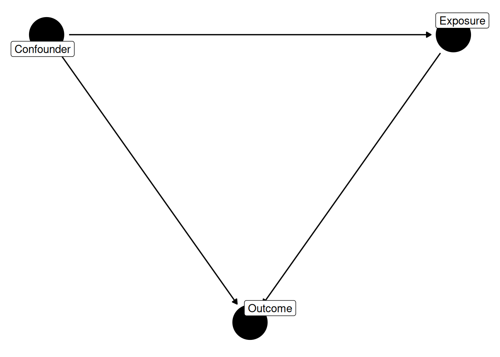
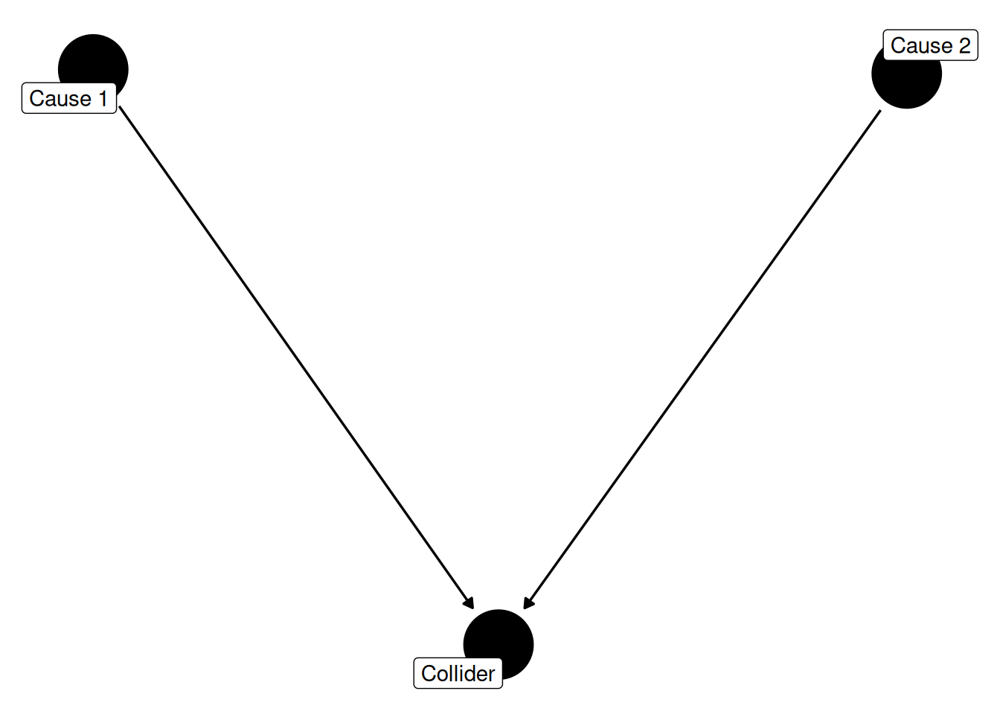
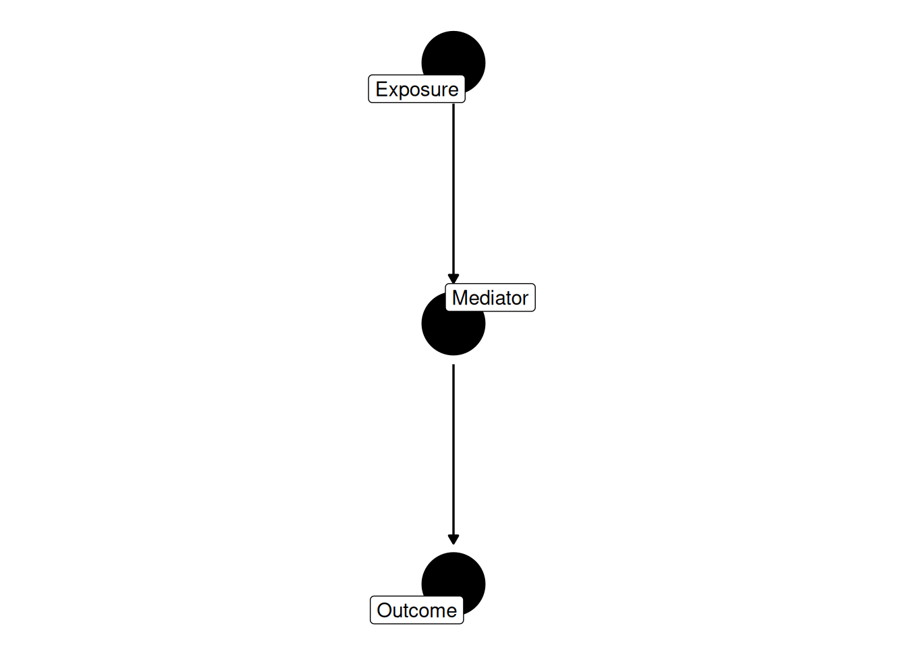
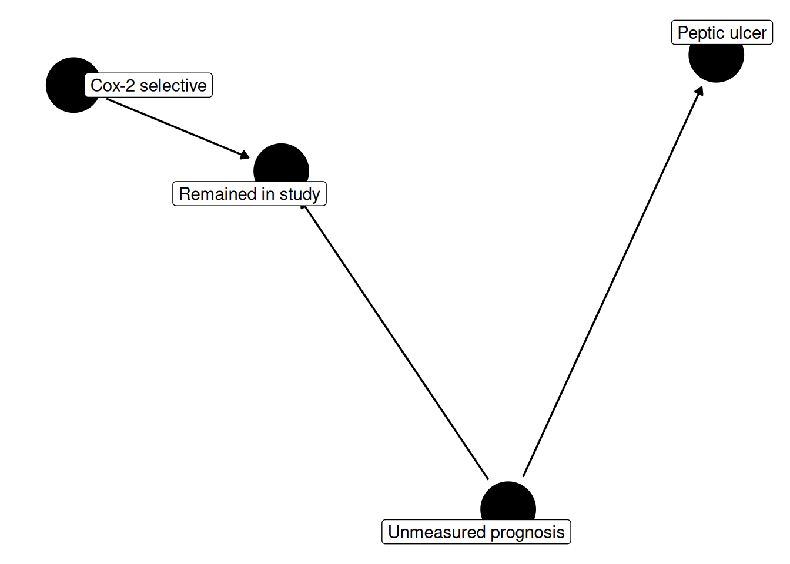

Chapter 5 Causal diagrams
Chapter 1 named confounding by indication in words: physicians steer Cox-2 selective NSAIDs toward patients they already judge to be at higher gastrointestinal risk, which is why the crude comparison came out backwards. Chapter 3 gave that idea a formal home inside potential outcomes, as a failure of exchangeability, and named the covariates that would need to be equal on average across treatment groups for a comparison to be believable. What neither chapter offered was a way to look at a causal assumption and read off, mechanically, which variables belong on that list — and, just as important, which variables do not belong on it and would actively damage the analysis if included. In this chapter we build that language. A causal diagram turns a set of substantive beliefs about how variables relate to one another into a picture we can reason about with a handful of rules, check with software, and cross-check with colleagues who may not share our subject-matter expertise but can still read a graph.
5.1 Drawing causal assumptions
A causal diagram, in the sense we use throughout this book, is a directed acyclic graph (DAG): a collection of nodes, one for each variable that matters to the question, connected by arrows that represent direct causal effects. An arrow from \(A\) to \(B\) asserts that \(A\) has some effect on \(B\), holding everything else in the picture fixed; the absence of an arrow is an equally substantive claim, that no such direct effect exists. “Acyclic” rules out feedback loops drawn as a single static picture — \(A\) cannot cause \(B\) which causes \(A\) within the same diagram, though time can be represented instead by drawing \(A\) at one point in time and \(A\) at a later point as two separate nodes. Every arrow in a DAG is a claim someone is willing to defend on scientific grounds, not a claim estimated from data; the diagram is where we write causal assumptions down and argue about them, before any regression runs.
A path between two nodes is any sequence of arrows connecting them,
regardless of direction. Some paths are causal paths: every arrow
along the way points forward, from the exposure toward the outcome,
tracing an actual mechanism by which the exposure could affect the
outcome. Other paths are backdoor paths: they connect exposure to
outcome but enter the exposure node through an arrow pointing into
it, meaning they trace a route through some third variable that causes
both, rather than an effect of the exposure itself. A crude comparison
of exposed and unexposed patients pools every open path between them,
causal and backdoor alike, which is exactly why Chapter 1’s comparison
of Cox-2 initiators and nonselective initiators mixed whatever real
effect Cox-2 selectivity has on ulcer risk with whatever backdoor paths
ran through GI risk, age, and steroid use. The goal of adjustment,
translated into this graphical language, is to close every backdoor
path while leaving every causal path open — a criterion precise enough
that software can check it, as we’ll see directly when we turn to the
NSAID question in the next section. The formal name for the state we are
aiming at is d-separation: two variables are d-separated, given a set
of conditioning variables, when every path between them is blocked. It is
the term used in the course’s DAG workshop and throughout the
graphical-models literature, and it is what dagitty is checking when we
ask it whether an adjustment set suffices.
5.2 The NSAID–PUD diagram
Let’s encode, in a diagram, the causal story Chapters 1 and 3 have been telling about Cox-2 selectivity and peptic ulcer disease: GI risk factors, age, and corticosteroid use each influence a physician’s choice between a Cox-2 selective and a nonselective NSAID, and each also influences ulcer risk directly, alongside whatever effect the drug itself has.
library(ggdag)
dag_nsaid <- dagify(
pud ~ cox2 + gi_risk + age + steroids,
cox2 ~ gi_risk + age + steroids,
exposure = "cox2",
outcome = "pud",
labels = c(cox2 = "Cox-2 selective", pud = "Peptic ulcer",
gi_risk = "GI risk factors", age = "Age",
steroids = "Corticosteroids")
)
ggdag(dag_nsaid, text = FALSE, use_labels = "label") + theme_dag()
The picture makes the confounding structure literal: gi_risk, age,
and steroids each sit upstream of both cox2 and pud, so each one
opens a backdoor path from cox2 to pud that has nothing to do with
the drug’s own effect — cox2 <- gi_risk -> pud, cox2 <- age -> pud,
and cox2 <- steroids -> pud, alongside the single causal path
cox2 -> pud that is the object of interest. Rather than reason through
each backdoor path by hand, we can let dagitty do it directly:
## { age, gi_risk, steroids }adjustmentSets() reports exactly one minimal set here: {age, gi_risk, steroids}. That result tells us two things at once. First, adjusting for
all three variables together closes every backdoor path in the diagram,
so a comparison of Cox-2 and nonselective initiators that conditions on
age, GI risk factors, and steroid use — by stratification,
standardization, or a propensity score built from them, the subjects of
Chapters 7 through 9 — is no longer contaminated by the confounding this
diagram encodes. Second, and just as informative, no smaller set will
do: because each of the three variables opens its own separate backdoor
path with no shared intermediate node, dropping any one of them leaves
that path open, and the comparison stays confounded through whichever
variable was left out. This is precisely the graphical version of the
conditional exchangeability condition from Chapter 3 — \(Y^a
\perp A \mid L\) for \(L\) equal to this adjustment set — except that here
we read the set off a picture instead of asserting it by fiat, and we
leave the diagram open for a colleague to challenge by redrawing an
arrow rather than by re-deriving an equation.
5.3 Confounders, colliders, and mediators
Real diagrams can have dozens of nodes, but nearly everything about how adjustment behaves comes down to three small structures repeated throughout. Getting the direction of each one right, and learning to adjust only for the first, is most of what we set out to do in this chapter.
A confounder is a common cause of exposure and outcome, the pattern
gi_risk, age, and steroids all instantiate above: a variable with
arrows pointing into both the exposure and the outcome, opening a
backdoor path that adjustment is meant to close.
dag_confounder <- dagify(
y ~ x + c,
x ~ c,
exposure = "x", outcome = "y",
labels = c(x = "Exposure", y = "Outcome", c = "Confounder")
)
ggdag(dag_confounder, text = FALSE, use_labels = "label") + theme_dag()
A collider is the mirror image: a common effect of two other variables, with arrows pointing into it from both sides rather than out of it.
dag_collider <- dagify(
m ~ x + z,
exposure = "x", outcome = "z",
labels = c(x = "Cause 1", z = "Cause 2", m = "Collider")
)
ggdag(dag_collider, text = FALSE, use_labels = "label") + theme_dag()
Left alone, a collider does nothing to the association between its two
causes — if x and z are independent, they stay independent whether
or not anyone ever looks at m. The trouble starts the moment m is
conditioned on, whether deliberately, by restricting a sample to
m’s observed value, or invisibly, by studying only the patients who
survived to be observed at all. Conditioning on a common effect
manufactures an association between its causes where none existed,
because within any fixed value of m, learning that one cause was
small makes the other cause more likely to have been large enough to
produce that value of m on its own. Let’s make this concrete with a
short simulation: we draw two variables that are causally unrelated to
each other, build a third variable as their common effect, and compare
the association between the first two before and after restricting to
one level of the third.
set.seed(5)
n <- 5000
gi_risk_indep <- rnorm(n) # cause 1, unrelated to cause 2 by construction
frailty <- rnorm(n) # cause 2, unrelated to cause 1 by construction
# collider: a variable such as "hospitalized" driven by both causes plus noise
hosp_score <- gi_risk_indep + frailty + rnorm(n)
hospitalized <- as.integer(hosp_score > quantile(hosp_score, 0.75))
collider_df <- tibble(gi_risk_indep, frailty, hospitalized)
fit_full <- lm(frailty ~ gi_risk_indep, data = collider_df)
fit_cond <- lm(frailty ~ gi_risk_indep, data = collider_df |> filter(hospitalized == 1))We simulated gi_risk_indep and frailty as independent draws, so the
true association between them is zero by construction, and the
regression run on the full sample confirms it: the slope is
0.014 (p = 0.34),
indistinguishable from no relationship at all. When we restrict that
same regression to the 1250 patients in the
top quartile of the collider score — patients who were “hospitalized”
in this simulation — we turn that null slope into
-0.306 (p < 0.001),
a strong, highly significant, entirely artificial association between
two variables that never had any causal connection. Nothing about the
world changed between the two regressions; only the sample did. That is
collider bias: adjustment applied to the wrong kind of node does not
merely fail to help, it manufactures exactly the kind of spurious
association we have spent this whole book trying to avoid.
The third structure is a mediator: a variable that sits on the causal path itself, transmitting some or all of the exposure’s effect on the way to the outcome rather than confounding it.
dag_mediator <- dagify(
y ~ m,
m ~ x,
exposure = "x", outcome = "y",
labels = c(x = "Exposure", m = "Mediator", y = "Outcome")
)
ggdag(dag_mediator, text = FALSE, use_labels = "label") + theme_dag()
Adjusting for a mediator is not the same mistake as adjusting for a
collider — a mediator really is caused by the exposure, and really does
cause the outcome — but it is still the wrong move for the question we
ask throughout this book, the total effect of exposure on outcome.
Conditioning on m blocks the very causal path x -> m -> y that
carries the effect we are trying to estimate, so a regression of y on
x that also includes m answers a narrower question (how much of the
effect survives independent of that pathway) while looking,
superficially, like the same kind of adjusted analysis that closes a
backdoor path. We put confounders in the adjustment set; colliders and
mediators, in their different ways, we leave out of it.
5.4 Selection bias as collider stratification
The collider simulation above used “hospitalized” as a placeholder, but the same mechanism drives a problem we know by a more familiar name: selection bias. Reading selection bias structurally — as conditioning on a collider, rather than as a catalog of study-design mishaps — is the account Hernán, Hernández-Díaz, and Robins (2004) gave, and it is the one the rest of this section follows. Suppose Cox-2 selectivity has some effect on the chance a patient tolerates therapy long enough to stay in a study, and, independently, that some unmeasured element of a patient’s underlying prognosis also affects whether they remain in follow-up long enough to have their outcome observed. “Remained in the study” is then a collider: an arrow into it from treatment, and an arrow into it from unmeasured prognosis.
dag_selection <- dagify(
pud ~ u,
s ~ cox2 + u,
exposure = "cox2", outcome = "pud",
labels = c(cox2 = "Cox-2 selective", pud = "Peptic ulcer",
u = "Unmeasured prognosis", s = "Remained in study")
)
ggdag(dag_selection, text = FALSE, use_labels = "label") + theme_dag()
Any analysis that only ever sees patients who remained in the study —
which is every analysis we run on complete cases, unless we do
something deliberate about it — is conditioning on s whether or not
we ever typed a filter() call to do it, simply because patients who
were lost to follow-up never show up in the rows being summed. By the
same logic as the simulation above, that conditioning can open an
association between cox2 and pud running through u, even in a
world where the diagram already grants that GI risk, age, and steroid
use have been fully adjusted for and the drug has no true effect on
ulcer risk whatsoever. The bias is not fixed by measuring more baseline
covariates, because it is not a confounding problem — it is created by
which patients are present to be analyzed in the first place, after
treatment has already had a chance to influence who stays and who
leaves. Chapter 11 takes up exactly this failure mode under its
clinical name, informative censoring, and there we build inverse
probability of censoring weights as the fix: reweighting the patients
who remain so that they stand in, on average, for everyone who should
have been followed, treated and untreated alike.
5.5 Exercises
- Add a node for
otc_nsaid(over-the-counter NSAID use, unmeasured inns) todag_nsaid, with arrows into bothcox2andpud, and re-rundagitty::adjustmentSets()on the result. Does an adjustment set still exist? Ifotc_nsaidcannot be included because it is never recorded, what does that imply about the conditional exchangeability assumption from Chapter 3 as applied to thenscohort? - Draw a DAG for the statin question using
dagify(), withstatinas the exposure and cardiovascular event as the outcome, that includes a node for the healthy-user behaviors described in Chapter 1 (exercise, diet, medication adherence generally) as a common cause of both statin initiation and the outcome. RunadjustmentSets()on your diagram and compare the set it returns tosta_covs. - Modify
collider_dfin thecollider-simchunk so thathospitalizedis defined by restricting to the bottom quartile ofhosp_scoreinstead of the top quartile. Re-fit the conditional regression and report the new slope. Is the sign the same as in the chapter? Explain, in terms of the collider mechanism, why conditioning on either tail of a common effect induces an association, while conditioning on nothing (the full sample) does not.